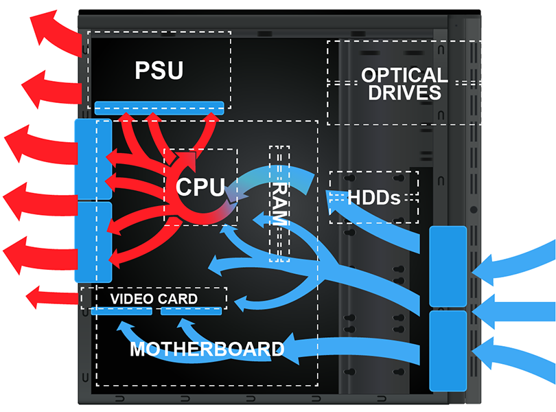

System Cooling
The normal operation of computer components produces heat. Overheated components can cause intermittent errors and reduce component life. If components are overheated for an extended period, they will fail. To keep component temperatures optimal, computer cases maintain a consistent, one-way flow of air through the case.
This lesson covers the following topics:
- Airflow in a computer case
- Cooling system components
- Cooling system recommendations
Airflow in a Computer Case
The following diagram shows how air should flow through a computer case:
System Cooling

Cooling System Components
The following table describes components that help regulate a computer system's internal temperature:
Case fans
Case fans create a pressurized system that allows air to flow through the case in a specific way. Intake fans (at the front) pull air inside the case to cool components. Outtake fans (at the back and top) exhaust warm air from inside the case. Some cases have intake fans on the side case cover. Fan filters can minimize dust and debris inside the case.
Power supply
ATX power supplies aid in cooling by exhausting hot air out the back of the case.
Heat sink
Heat sinks are made of a heat conductive material (usually aluminum or copper) and are attached to components using a thermal paste or pad. Heat sinks are designed with fins to increase the surface area exposed to air, allowing heat to dissipate from the component much faster. Heat sinks can be active or passive. Active heat sinks have an attached fan that helps cool the component at a faster rate. Active heat sinks are used with CPUs, high-end video cards, and some motherboard chipsets with integrated graphics. Passive heat sinks rely on increased surface area and passive air movement to cool the component. Passive heat sinks are used with most motherboard chipsets, low-end video cards, and memory modules.
Heat sensors
Most motherboards include the following heat sensors: CPU sensor (located on the circuit board underneath the processor), System case sensor (located either on the motherboard or on a cable attached to the motherboard), Room temperature sensor (usually connected to the motherboard by a cable and mounted on a case slot). Special software can monitor the temperature levels and be configured to send warnings when high temperature conditions exist. You can configure the BIOS in most motherboards to automatically shut down the system when a specified thermal threshold is exceeded.
Liquid cooling
Liquid cooling systems are used when air cooling is not sufficient. Liquid-based cooling systems are composed of tubes, cooling plates, a reservoir, and a radiator. Cooling plates have tubes connected to them and are attached to components. Liquid coolant is circulated through the system, cooling it. Because liquid cooling can dissipate heat much faster than air cooling, it is primarily used for high-end gaming computers and high-performance systems.
Cooling Troubleshooting
Issues related to insufficient cooling are sometimes difficult to identify. They usually manifest as random errors or system lockups. You can use freeze spray to troubleshoot cooling problems. You spray freeze spray on a component you suspect of overheating and causing the system to fail. The freeze spray reduces the temperature of the component. If the problem goes away after spraying the component, implement additional cooling solutions for that component.
Cooling System Recommendations
Because proper airflow is necessary to keep components cool, consider the following recommendations to ensure optimal system cooling:
- Keep the case free of dust and debris. Excess dust can restrict airflow and prevent proper heat transfer.
- Reduce the number of airflow obstructions.
- Employ proper cable management (i.e., bundle cables together and secure unused cables to the case).
- Space multiple hard disk drives instead of stacking them next to each other.
- Do not use an excessive number of expansion cards.
- Maintain appropriate ambient temperatures. Optimal ambient temperatures are between 60 and 80 degrees Fahrenheit. For server rooms, the ambient temperature might be as low as 45 degrees.
- Ensure proper ventilation.
- Keep air intakes and exhausts free from obstructions.
- Leave space between the computer and any walls or desks.
- Preserve negative pressure inside the case by keeping all covers and shields installed (e.g., unused expansion cards, I/O shield, front drive bays).